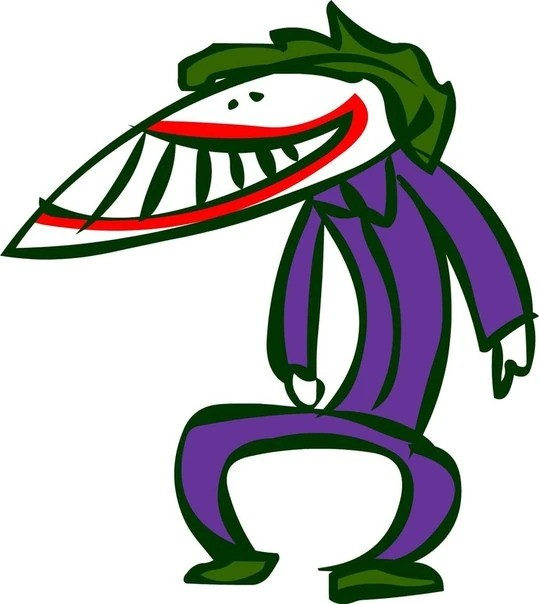

the case for joker
The Joker is Gotham’s ultimate agent of chaos, a character defined by his unpredictability and lack of a fixed origin, often described as having a "multiple-choice past." He thrives on dismantling order, exposing the fragility of society and the hypocrisy of morality, as seen in stories like The Killing Joke and The Dark Knight. With no clear motives beyond creating anarchy, he serves as a dark mirror to Batman, challenging the Dark Knight’s ideals and sanity. His twisted sense of humor, combined with his capacity for extreme violence, makes him both terrifying and fascinating. The Joker’s versatility allows him to shift roles effortlessly—from a comedic trickster to a philosophical terrorist—depending on the narrative. Ultimately, he represents the chaos and madness lurking beneath the surface of civilization, making him one of fiction’s most compelling and enduring villains.
Batman

Batman, born from the tragic murder of his parents, Bruce Wayne, is a complex hero defined by his unwavering mission to protect Gotham City. By day, he plays the role of a billionaire playboy, but by night, he becomes the Dark Knight, using fear, intellect, and cutting-edge technology to combat crime. His strict moral code, particularly his refusal to kill, sets him apart, creating a constant tension between justice and vengeance. Despite his mastery as a detective, martial artist, and strategist, Batman is deeply human, grappling with trauma, isolation, and the fear of crossing the line into darkness.